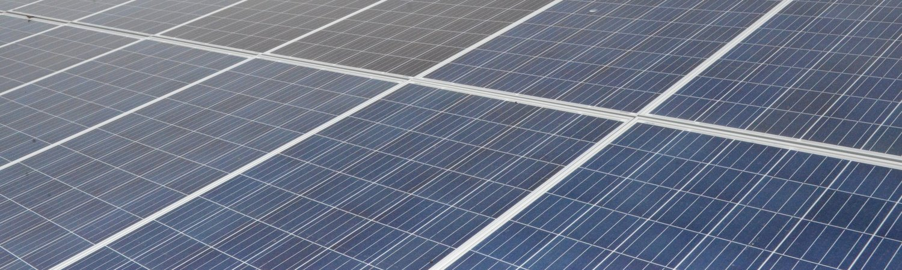

Güneş Enerjisi Çözümlerimiz
Kuruluşların güneş enerjisine geçişine yardımcı olabilecek finansman ve hizmet tabanlı çözümlerimizi keşfedin.
Enerji SATIN ALMA SÖZLEŞMESİ
Bu, kendi güneş sistemine sahip olmak ve işletmek zorunda kalmadan güneş enerjisine geçmek isteyen kuruluşlar için iyi bir seçenektir. Kuruluşunuzla bir enerji satın alma anlaşması imzalayacağız ve size güneş sistemi tarafından üretilen enerjiyi aylık sabit bir ücret karşılığında satacağız. Ekibimiz güneş sistemini tasarlayacak, kuracak ve işletecektir. Kuruluşunuz hala yedek jeneratörünüzü işletmek ve dizel yakıtı almaktan sorumludur. Anlaşmanın sonunda güneş sistemini tesisinizden kaldıracağız. Anlaşmalar 3 ila 10 yıl arasında değişebilir.
Faydaları:
- Güneş enerjisine kolay geçiş
- Öngörülen sermaye maliyeti yok
- Maliyet tasarrufu
- Düşük aylık ücret
- Teknik veya finansal risk yok
ENERJİ HİZMETLERİ SÖZLEŞMESİ
Bu, güneş enerjisine geçmek ve enerji üretiminin% 100'ünü dış kaynak olarak kullanmak isteyen kuruluşlar için iyi bir seçenektir. Kuruluşunuzla bir enerji hizmeti anlaşması imzalayacağız ve size sistemin ürettiği enerjiyi tüketime bağlı olarak aylık olarak değişecek şekilde satacağız. Ekibimiz güneş ve yedek jeneratör içeren eksiksiz bir enerji sistemi tasarlayacak, kuracak ve işletecektir. Jeneratörünüzü çalıştırmak ve yakıt tedarik etmekten sorumluyuz. Anlaşmanın sonunda sistemi tesisinizden kaldıracağız. Anlaşmalar 3 ila 10 yıl arasında değişebilir.
Faydaları:
- İşlemleri kolaylaştırmak için enerji üretimini tamamen dış kaynak olarak kullanmak
- Güneş enerjisine kolay geçiş
- No upfront capital costs
- Öngörülen sermaye maliyeti yok
- Düşük aylık ücret
- Teknik veya finansal risk yok

KİRALAMA
Bu, kendi güneş sistemine sahip olmak isteyen ancak ekipman satın almak için gereken yatırım sermayesinden yoksun olan kuruluşlar için iyi bir seçenektir. Kuruluşunuzla bir kira sözleşmesi imzalarız ve size sistemin ürettiği enerjiyi, kira süresince sabit bir aylık ücret karşılığında satıyoruz. Sistemi tasarlıyor, kuruyor ve işletiyoruz. Kiralama sonunda güneş sistemini size devrederiz ve kuruluşunuz sistemi işletmekle yükümlüdür. Kira sözleşmeleri genellikle 3-5 yıl sürer.
Faydaları:
- Güneş enerjisi sistemi satın almak için rekabetçi finansman seçeneği
- Güneş enerjisine kolay geçiş
- No upfront capital costs
- Öngörülen sermaye maliyeti yok
- Düşük aylık ücret
- Teknik veya finansal risk yok
SATIN ALMA
Bu, kendi enerji üretimini ilk günden itibaren yönetmeyi tercih eden, şirket içi teknik uzmanlığa sahip olan ve ekipman satın almak için sermayeye erişimi olan kuruluşlar için iyi bir seçenektir. Operasyonlarınız için uygun bir güneş sistemi tasarlamak ve kurmak için kuruluşunuzla birlikte çalışacağız. Kuruluşunuz kurulduktan sonra sistemin mülkiyetini alacak ve işletme ve bakımdan sorumlu olacak.
Faydaları:
- İyi tasarlanmış bir güneş enerjisi sistemi satın almak için teknik destek
- Uzun vadede en büyük maliyet tasarrufu (+7 yıl)
- İlk yatırımın ardından aylık çok düşük enerji maliyetleri
- Yenilenebilir enerji hizmetleri şirketine finansal zorunluluk yok